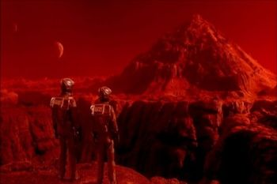

|

«Вспомнить всё» (англ. Total Recall) — фантастический боевик режиссёра Пола Верховена 1990 года с участием Арнольда Шварценеггера. Фильм снят по мотивам рассказа Филипа Дика «Из глубин памяти». Фильм номинировался на премии «Оскар» за лучший звук и лучший монтаж звука, но взял специальный «Оскар» за визуальные эффекты.
Интересные факты:
• Кассовые сборы в США $119 400 000, кассовые сборы в других странах $142 000 000
• В 1989 году известный американский фантаст Пирс Энтони опубликовал новелизацию этого кинофильма под тем же названием «Total Recall» («Вспомнить всё»).
• Изначально (в первой половине 1980-х годов) фильм должен был снимать Дэвид Кроненберг, который вышел из проекта после того, как продюсеры отвергли 12 написанных им вариантов сценария.
• Среди кандидатов на роль главного героя рассматривались Джефф Бриджес, Патрик Суэйзи и Ричард Дрейфус.
• Некоторые сюжетные решения были взяты из книги Дугласа Адамса «Путеводитель по Галактике для путешествующих автостопом» (The Hitch-Hiker’ s Guide to the Galaxy), а именно: раздражающе вежливый робот-таксист Джонни, постоянно насвистывающий норвежский национальный гимн, обертывание головы мокрым полотенцем во избежании излучения «жучка» (именно в «Путеводителе» было сказано: «Чтобы скрыться от преследователей, оберните полотенце вокруг своей головы»), а также проститутка с тремя грудями.
• Картина была снята в Мехико — столице Мексики. Там были построены грандиозные декорации, там же, на станции метро «Chabacano», были сняты сцены в подземке, а некоторые эпизоды снимались в Военной академии Мехико.
• В первоначальном варианте сценария главный герой Куэйд был бухгалтером, потом его сделали строителем.
• Робот-таксист Джонни был сделан по образу и подобию актёра Роберта Пикардо и озвучен тоже им.
• Ряд реалий 2084 года уже в 2010 году выглядит полной архаикой (например, CRT-мониторы в вагонах метро).
• Когда человек попадает в открытый космос или вакуум, его глаза не могут вырываться из глазниц, как это показывается в фильме. Человек приблизительно 10-20 секунд находится в нормальном состоянии, благодаря чему может вернуться к безопасному месту. Но даже если он не вернется, то все еще будет жив в течение приблизительно минуты, хотя и без сознания. Единственная проблема, которая могла бы возникнуть - это разрыв барабанных перепонок и возможная слепота (при сохранении глазных яблок). Были также произведены опыты на шимпанзе - их поместили в камеру с атм.давлением, схожим с марсианским (около 2 мм.рт.ст.). Через 3 минуты их вытащили и смогли "откачать".
• Сценарий фильма находился в разработке 10 лет.
• Над сценарием работал Ричард Дрейфус, на другом этапе - Дэвид Кроненберг.
• Арнольд Шварцнеггер изначально хотел получить главную роль.
• После утверждения Арни на роль, зачуханный клерк Куэйл превратился в мускулистого строительного рабочего Куэйда и был переписан финал картины.
• После просмотра «Робота-полицейского» Арнольд сам добился утверждения сценария, состава съемочной группы и настоял на том, чтобы режиссером фильма был Верховен.
• Когда Куэйд одет, как толстая женщина, паспорт, который он передает охраннику, - настоящий паспорт Присциллы Аллен, сыгравшей толстую женщину.
• Самые большие рекламные плакаты, которые можно заметить в сцене, где Куэйд выходит из метро, - настоящие биллборды, которые находились около станции «Insurgentes» в Мехико Сити. Наиболее заметные из них - Fuji Film и Coca Cola.
• Оригинальная версия фильма получила рейтинг «Х» из-за чрезмерного насилия на экране. В дальнейшем фильм был перемонтирован: наиболее жестокие моменты были вырезаны, а также были использованы новые ракурсы камеры. Перестрелка в метро, где Куэйд использует человеческое тело в качестве щита от пуль, больше всего подверглась дополнительному монтажу. В конце концов, фильм получил рейтинг «R».
• Если верить диаграмме, которую показывают Куэйду в «Recall», то с каждым годом космические путешествия становятся менее безопасными.
• В металлическом чемодане Куэйда можно заметить пропуск рабочего в «Пирамидные рудники» на Марсе.
• Вся съёмочная группа получила пищевое отравление во время съёмок, за исключением Арнольда Шварценеггера, который ел исключительно еду, доставленную из США, и Рональда Шусетта, который предпринимал чрезмерные меры личной гигиены, например, чистил зубы исключительно кипяченой водой.
• Миниатюрные модели, использовавшиеся для съёмок марсианских ландшафтов, были сделаны на основе фотографий поверхности Марса.
• Количество погибших в фильме: 77.
• В ранних версиях сценария главного героя звали Дуглас Куэйл, так же как и в рассказе Филипа Дика. Однако во время съёмок вице-президентом США был Дэн Куэйл. Скорее всего, это стало главной причиной изменения имени героя Арнольда Шварценеггера.
• Сцена, в которой доктор Эджмар (Рой Броксмит) объясняет Куэйду, что он находится в состоянии сна, основана на сцене между Полом Ньюманом и Людвигом Донатом в «Разорванном занавесе» (1966). Некоторые ракурсы камеры в точности повторяют картину Хичкока.
• Время действия - 2084 год, и это явно указано в одном из кадров. Когда таможня ставит штамп в паспорте "полной женщины" (Куэйда) - там стоит дата 19.6.2084. Это начало 45-й минуты фильма.
• Испанское название фильма – «El Vengador Del Futuro», что в дословном переводе означает «Будущий мститель».
• По словам монтажера Фрэнка Джей Уриосте, первоначально не предполагалось делать панорамные кадры города на Марсе, т.к. по мнению продюсеров, они были слишком затратные и могли привести к перерасходу бюджета. С данной проблемой Фрэнк поделился с Арнольдом Шварценеггером, которому удалось убедить продюсеров снять данные сцены.
• В сцене в метро, где Арнольд Шварценеггер разбивает стекло вагона и запрыгивает в поезд, использовался небольшой заряд взрывчатки. Однако в одном из дублей взрывчатка не сработала, и Арни на самом деле разбил стекло рукой.
• Потребовалось 15 кукловодов для контроля движений Куато.
• Имя Куато происходит от испанского слова «cuate», что означает двойник.
• Во время съёмок Шэрон Стоун жаловалось Полу Верховену, что она не уверена, является ли её героиня воображением Дага Куэйда, либо её персонаж на самом деле замужем за Дагом.
• Когда Куэйду показывают картинки на мониторе в «Recall», на одной из них изображен тот самый реактор на Марсе.
• Картина заканчивается кадром с плавным переходом в белый фон, для того чтобы оставить сомнения у зрителей, что всё показанное в фильме происходило в воображении Куэйда, и в конце фильма он подвергся лоботомии.
• Сюжет в котором главный персонаж, имеющий проблемы с памятью, отправляется на другую планету, чтобы восстановить на ней атмосферу и прекратить произвол "продавцов воздуха" был впервые использован в советском фильме "Через тернии к звездам" 1980 года.
29 июля 2010 компания Sony Pictures анонсировала создание римейка «Вспомнить все». Как стала известно позже - съемки начнутся в марте 2011 года в Канаде. Режиссером фильма станет Лен Уайзмен, известный по картинам « Крепкий орешек-4» и первым двум частям «Другого мира».
|